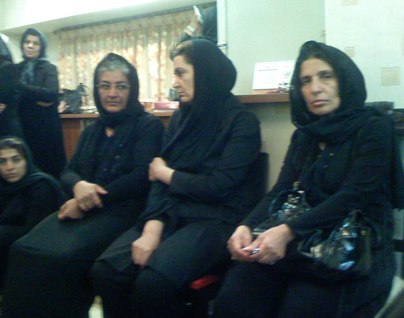

پذيرش > اخبار > دیدار برخی از مادران کمپین و فعالان جنبش زنان با مادران ندا، سهراب و اشکان/ چهلم ندا (...)

 دیدار برخی از مادران کمپین و فعالان جنبش زنان با مادران ندا، سهراب و اشکان/ چهلم ندا در کنار مادر ندا خواهیم بود دیدار برخی از مادران کمپین و فعالان جنبش زنان با مادران ندا، سهراب و اشکان/ چهلم ندا در کنار مادر ندا خواهیم بود
1 مرداد 1388 - - نسخه قابل چاپ

تغییر برای برابری - شامگاه روز گذشته 31 تیرماه تعدادی از مادران کمپین یک میلیون امضا و فعالان جنبش زنان، به دیدار مادر ندا آقاسلطان رفتند تا ضمن تسلیت به او بگویند چهلم ندا در کنارشان خواهند بودو حق خواهی را پاس خواهند داشت، به او بگویند که سال هاست این جنبش برای حق خواهی اش تلاش می کند، برای برابری خواهی به زندان می رود وعلیه تبعیض فریاد می زند و هم اکنون نیز فرزندانی را در بند دارد. مادر ندا روز پنجشنبه 8 مرداد ساعت 5 بر مزار دخترش خواهد بود.
مادر ندا از فرزند شهیدش چنین یاد کرد: "27 سال داشت از کودکی خاص بود و ارتباط نزدیکی با خدا داشت، آواز می خواند و اهل موسیقی بود و کتاب های فلسفی و چرایی های زندگی اش پایانی نداشت. همین چرایی ها او را به رشته ی الهیات کشاند اما بعد از مدتی از این رشته انصراف داد و مطالعاتش را به صورت فردی پی گرفت. ندا بسیار جسور و شجاع بود و از کودکی در مقابل هیچ حرف زوری سر فرود نمی آورد. همین ویژگی اش او را به خیابان کشاند".
ساعتی بعد مادران داغدار سهراب اعرابی و اشکان سهرابی که خود فرزندان حق طلب شان را در این مبارزه مدنی از دست داده بودند و همچنین زنان فعال جبهه مشارکت که همسران دربند دارند به دیدار این مادر داغدار آمدند و در فضایی آکنده از اشک و اندوه مادران داغدیده ی سه شهید در کنار هم و مقابل حضار نشستند.

مادر شهید اشکان سهرابی از چگونگی مرگ فرزند عزیزش گفت: " بیایید بپرسید. این بچه خیلی سر به زیر بود. من خانه بودم شام درست می کردم. اشکان گفت می روم خانه ی دوستم وزود برمی گردم. با دلشوره گفتم زود بیا خیابان شلوغ است. چند دقیقه نگذشته بود که دوستش آشفته حال آمد و گفت به خدا من ندیدم چه شد اما اشکان را زدند. گفتم کی گفت نمی دانم فقط دیدم که اشکان را زدند. خودم را سرآسیمه رساندم فقط گفت مادر سوختم. با موتوری که می آمد او را به بیمارستان رساندیم. در بیمارستان چند ثانیه از پشت در دیدمش. ده دقیقه بعد در بیمارستان شهید شد".
پروین فهیمی مادر شهید سهراب اعرابی هم شهادت فرزندش را روایت کرد و گفت شما خوش شانس تر بودید. روزی که در آگاهی شاپور عکس سهراب را شناسایی کردیم یک ماه از سرگردانی من در مقابل دادگاه انقلاب و زندان اوین می گذشت. من می رفتم که سهراب را پیدا کنم و عکس او را به هر زندانی که آزاد می شد نشان می دادم شاید خبری از پسرم داشته باشد. روزهای آخر وحشت کرده بودم که این طولانی شدن و بی خبری و تلفن نزدن دلیلی دارد در تمام این مدت به هر جا می توانستم سر زدم و نامه دادم اما هیچ کسی پاسخ گو نبود و می گفتند زندان است و زنگ می زند. مرا آزار دادند. شکنجه ی روحی دادند".
مادر ندا از روز شهادت ندا و روزهای بعد از آن سخن گفت: "روزهای پیش از آن حادثه گفت که همه ی ما دیدیم و شنیدیم. ندا تا چند دقیق پیش از حادثه تلفنی با ما در تماس بود. مدت کوتاهی بعد از آخرین تماس استاد ندا با ما تماس گرفت و گفت پای ندا تیر خورده و به بیمارستان شریعتی منتقل شده است. ما به سرعت خود را به بیمارستان رساندیم و استاد موسیقی ندا را دیدیم که سراسر لباس اش غرق در خون است و بعد گفتند کتف اش گلوله خورده و کم کم متوجه مان کردند که پیش از رسیدن به بیمارستان به شهادت رسیده است. مادر ندا گفت که مسئولان پزشک قانونی اجازه خواستند که از مغز استخوان ندا برای پیوند دیگری استفاده کنند که موافقت کردیم. اما خبر شهادت ندا به سرعت منتقل شد. ما سکوت کردیم که بتوانیم جنازه ی او را تحویل بگیریم و صبح روز یک شنبه در پزشک قانونی بهشت زهرا جنازه ی او را به ما تحویل دادند. در تمام این مدت به طور مداوم ماموران و پلیس آمد و شد داشتند اما برخوردشان بسیار محترمانه بود اما اصرار داشتند که قاتل ندا را پیدا کنند به همین منظور تعداد زیادی از دوستان و اعضای خانواده را مورد پرسش و بازجویی قرار می دادند تا قاتل را پیدا کنند اما برای ما مهم نبود فقط می خواستیم با این شرایط کنار بیاییم.
ما خیلی مراسم و برنامه های عمومی اعلام نکردیم که برای مردم اسباب دردسر نشود. برای مراسم ختم به چند مسجد مراجعه کردیم. از جمله مسجد رضا در میدان نیلوفر و چند مسجد دیگر که هیأت امنای مسجد موافقت نکردند.
مسجد امام جعفر صادق بالای پل سید خندان موافقت کرد.. ما هشت و نیم شب اعلامیه را چاپ کردیم و ساعت دوازده و نیم متوجه شدیم که خبر در اینترنت پخش شده است. در عین حال به این دلیل که می دانستیم در مراسم تعداد زیادی شرکت خواهند کرد نگران شدیم که مبادا تعداد دیگری از جوانان در این برنامه بازداشت و یا کشته شوند و به همین دلیل مراسم را لغو کردیم. البته مطمئن هم نبودیم که اجازه ی برگزاری این مراسم داده می شد یا نه چون برای شب هفت هیچ مسجدی به ما اجازه ی برگزاری مراسم را نداد و تنها در بهشت زهرا یک تالار برای صرف شام موافقت کرد اما بعد از نیم ساعت از حراست بهشت زهرا با ما تماس گرفتند و نامه ای نشان دادند که بر اساس آن هیچ کدام از کسانی که در درگیری های بعد از انتخابات کشته شده اند حق برگزاری مراسم را ندارند. این حکم کلی و از طرف وزارت اطلاعات بود که به تمام مساجد ابلاغ شده بود. در مواردی هم شرایط بسیار سختی گذاشته بودند که خانواده ی کشته شدگان باید سه جواز کسب و تعهد نامه می گذاشتند که اگر مردم بیایند اتفاقی نمی افتد. سنگ های بزرگی می انداختند که خانواده ها از برگزاری هر مراسمی منصرف شوند. بعد از مدتی در مقابل سوال ماموران و کارآگاهانی که می گفتند به دنبال قاتل ندا هستند گفتیم ما از شما نمی خواهیم قاتل را معرفی کنید و با این روحیه ی نامساعد به حال خود رهایمان کنید. سهراب را چه کسی کشت؟ اشکان را چه کسی کشت؟
زمانی که ما به مزار ندا می رفتیم با ما کاری نداشتند اما با کسانی که خارج از اعضای خانواده به مزار ندا می رفتند برخورد می شد و در مواردی حتا با یکی از بستگان ما را که سر مزار ندا رفته بود برخورد کرده بودند که چرا می آیی و سر خاک ندا می نشینی.
خانواده ندا شایعاتی را که در مورد حضور پدر ندا در صدا وسیما و یا فرودگاه مطرح شده بود را تکذیب کردند و گفتند تا به حال با هیچ رسانه ای مصاحبه نکرده اند.
تا سپیدی چند ندا فاصله است؟
ساعتی بعد حمید پناهی استاد موسیقی ندا آقا سلطان به جمع سوگواران پیوست و روایت خود را از لحظه ی شهادت ندا چنین توصیف کرد: "پیش از این حادثه ما می گفتیم و می خندیدیم تا زمانی که بعد از درگیری در خیابان و شلیک گاز اشک آور به کوچه پناه بردیم. چشمانمان را مقابل آتش گرفتیم. ساعت دقیقا 18:10صدای کوتاه سفیر گلوله ای را شنیدیم و دیدم که ندا به روی زمین افتاد.
پیش از مرگ فقط گفت: "آقای پناهی سو.." حتا سوختم را نتوانست کامل ادا کند. وقتی گفتم بمان سرش را تکان داد و گفتم دستم را فشار بده دستش را فشار داد.
حمید پناهی حرف های دیگرش را در شعرهایی که برای ندا سروده بود خلاصه کرد و برای حاضران خواند. قرار است این شعر به طور کامل در روزنامه اعتماد منتشر شود اما بخش هایی از آن در زیر می اید :
تا سپیدی چند ندا فاصله است؟
به هوا برخاست از منیت های جاری دور شد
دشمن ظلم و عدوی زور شد
لحظه ای از ما برید .. حر شد و او حور شد
و ندا آمد ندا آمد ندا در نور شد
چه آسان او به من گفت سوختم
و چه آسان او فرو غلطید هم نشین درد شد
زرد شد دخترم سرد شد
تا رهایی را شناخت حور شد
ندا آمد ندا آمد ندا در نور شد
...
ارسال به
بالاترین
،
توییتر
،
فریندفید
،
فیسبوک
در همين بخش :
 پروین ذبیحی برنده جایزه حقوق بشری سازمان غيردولتى اتريشى سودويند شد پروین ذبیحی برنده جایزه حقوق بشری سازمان غيردولتى اتريشى سودويند شد
پخش کارت پستال و بروشور در روز جهانی زن در تهران
تمدید زمان برای امضای بیانیهی جمعی از فعالان زن به مناسبت هشت مارس
مجوزی که در نطفه خفه شد
بیش از 2000 امضا در اعتراض به تبعیض های آموزشی به مجلس تحویل داده شد
ديگر بخش ها :
طرح یک میلیون امضا
|
مقالات
|
سایت نوشته ها
|
اخبار
|
گزارش كمپين
|
گفت و گو
|
علیه سکوت
|
كوچه به كوچه
|
نامه های شما
|
گزارش ویژه
|
گفتگو با اعضا
|
ویژه سالگرد کمپین
|
تصویر برابری
|
دل آرام علی
|
تریبون
|
مقالات
|
تاریخ شفاهی
|
خارج از چارچوب
|
کتابخانه
|
درباره کمپین
|
کمپین در شهرها
|
کمپین در بند
|
صدای تغییر
|
ویژه 22 خرداد
|
لایحه حمایت از خانواده
|
گالری
|
عشا مومنی
|
امیر یعقوبعلی
|
خدیجه مقدم
|
راحله عسگری زاده و نسیم خسروی
|
پروین اردلان،جلوه جواهری، مریم حسین خواه، ناهید کشاورز
|
زینب پیغمبرزاده
|
سعیده امین، سارا ایمانیان، محبوبه حسین زاده، ناهید کشاورز و همایون نامی
|
احترام شادفر
|
نسیم سرابندی زاده،فاطمه دهدشتی
|
وبلاگ مهمان
|
پرونده خرم آباد
|
دستگیری ها
|
مریم مالک
|
پرستو اللهیاری
|
مهرنوش اعتمادی
|
سمیه رشیدی
|
Other Languages
|
همراهان
|
«فراخوان کمپین ده روز با بهاره هدایت»
| English
|